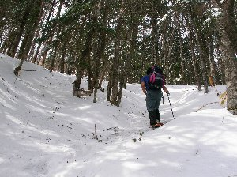
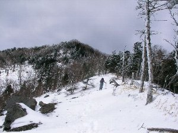
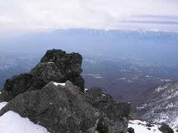

前三ッ頭山スノーシュー | 2006年3月 |
|---|---|
| 春も近づき、重くなっていく雪を避けるように、スキー場から遠ざかって行く３月。まだ、雪が残っている場所でスノーシューを楽しもうと友人と出掛けましたのでご報告を。 友人と山梨県の清里近く、天女山に行ってみました。 ここは手軽にスノーシューハイキングが楽しめるらしく、ネットで検索すると、結構スノーシューのページが出てくるので期待をしていたが、時期は既に3月、天女山手前のゲートに来ても雪は無い。 天気は快晴。ここで帰れない。 登れば雪も有るだろう、と天女山まで登ってみたが欠片も無い。（天女山までは３０分程度か） 遥か遠くの山並みにはギッチリの雪が見えるので、「行ける所まで行って、スノーシューやるぞ！」と意気込み、登山道を登り始める。 しばらく登ると、登山道は雪にまみれて絶好のスノーシュー場となった。 何処まで行けるだろう？ とスノーシューを履き、さらに登っていく。 | |
 天女山山頂（？）にて |  途中から雪まみれ♪ |
| 登り始めが7:30だったので11:30まで登り、そこで昼飯を食べて帰ってこよう、と言うことになった。 だんだんと雪が深くなってきて、尾根に出ると景色は抜群。 遠くには南アルプスが綺麗に見えるし、霞がかっているが富士山も見える。 反面、周りは雪と岩になり、斜面は天然の滑り台のように何処までも落ちて行きそうな傾斜。 地図をチェックすると、もう少しで前三ッ頭山なので、時間的にもちょうど良いし前三ッ頭山まで行こう、と登りはじめる。 | |
|  こりゃキツイ坂だ |  と、思ったらこんな励まし看板が |
| 斜面はさらにきつくなり、雪が無くてもきついのか、半分埋もれかかったロープと、「ここが一番キツイ。もう少しで三ッ頭山見える」と励ましの立札まで有る始末。 夏でもきつい斜面はスノーシューではヤバイ状況で、私はスノーシューを脱ぎ、つぼ足で登り始めました。（友人はスノーシューで） なんか、目的を忘れている・・・・・ | |
 へゃぁ〜こんな所まで来ちまった |  まだまだ登るぞ |
| いい加減疲れ切って嫌気が差して来た頃、やっと前三ッ頭山に到着（時間通り11:30）。と言っても、山頂と言う雰囲気は無く単なる尾根。 三ッ頭山へ行く道の通り道に過ぎない。 しかし、景色は最高で、曇って来てはいるが、眼下の町並み（と言うか平野）と横に広がる南アルプス、遠くに富士山や富士見パノラマスキー場まで見えました。 天気が良ければ、最高の場所ですね。 三ッ頭山まで登ればもっと景色が良いのかな？ | |
|  前三ッ頭山から南アルプスを望む |  前三ッ頭山で一応の登頂 |
| 待ちに待った昼食タイム♪ 本日は、お湯で５分茹でると、ちゃんとした味付パスタが出来るって言うレトルトと、運んでくる途中に潰れたパン、レトルトスープ。やっぱ、温かいものを食べたかったしね。 パスタはピリ辛で結構美味しいし、潰れてもパンは美味しい。 あー、コーヒーが欲しかったな。 食べている最中から風が出てきて、体感温度はグングン下り、（いや、初めから寒かったが気がつかなかったのか）手が震え始めた。ストーブのガスボンベが白く凍ってきて、空は鉛色の怪しげな雲が流れ込んできた。 | |
 今日のお昼ご飯（ひしゃげたパン） |  ケツ滑りと称して滑る降りる友人 |
| こりゃ雪が降るかも。急いで撤収作業をして、急斜面をスノーシューで下り始める。昼をゆっくり取りすぎ、下り開始は13:00。 下りの斜面は、踵（かかと）が固定されていないスノーシューはつらい。踵をロックして下っていく。 雪が深く軽く、急な斜面だと、有る程度スキーのように滑って行けるのが楽だ。 これが正しいか間違っているかなんて知らない。 楽しければ良い。 友人は「ケツすべり」と称し、スノーシューをブレーキ変わりに使い、ケツで滑って降りていた。 これはこれで個人の楽しみ方だ。 僕は、左足の前に右足を一直線になるように置き、腰を低く構え、バランスを取りながら滑っていく方法。 因みに、どちらも雪が一緒になって滑ってくるので、あまり開けた所でやると、雪崩の心配があるかもね。（無いなら無いって言って）僕らは林の中でやっていたので、雪は木に止まってしまったから。 大分降りてきて、もう直ぐ天女山と言うところで一息ついていたら、まじめに雪が降り始めた。風も出ていて、ちょっと吹き荒れている感じ。急ぎ車まで戻ると、そこでは小雨に変わっていた。あまり濡れずに済んだので良かったが。 さて、今回は山登りって感じのスノーシューになってしまったが、今度は大きな雪原でパウダーを楽しみたいな。ゆっくりコーヒー飲みながら。 写真＆コメント ｂｙ べっしー | |